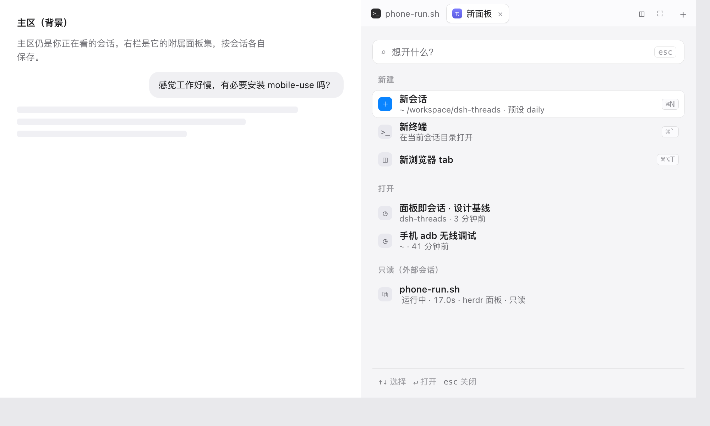
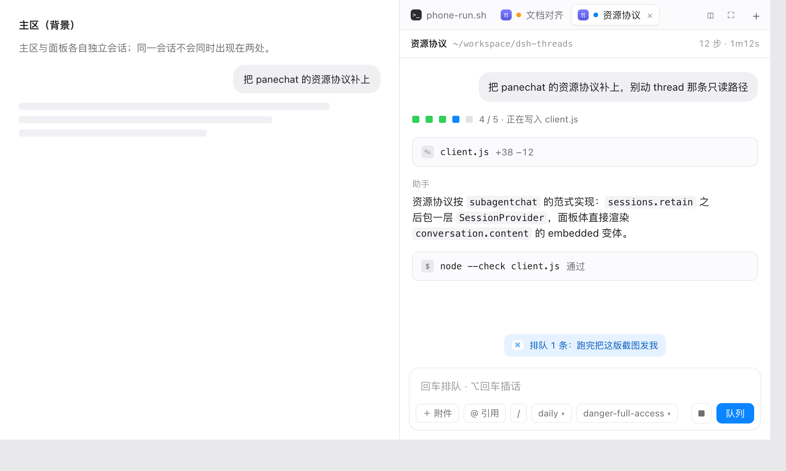
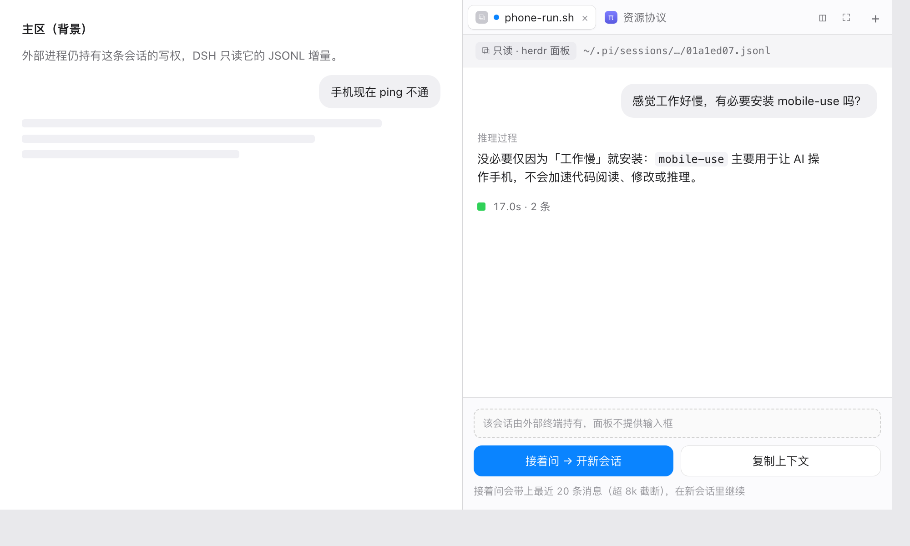

面板即会话 · 四态总览
① + 启动台 ② 新面板空态（原生 composer） ③ 运行中（状态点 + 队列） ④ 只读线程（无输入框）
① 「+」启动台
Codex 式：分区 + 搜索 + 键位常显

② 新面板空态
原生 composer：附件/@/斜杠/模型/权限
③ 运行中
四态点挂 tab；队列 chip 在输入框上方

④ 只读线程
没有输入框，只有「接着问 → 新会话」
